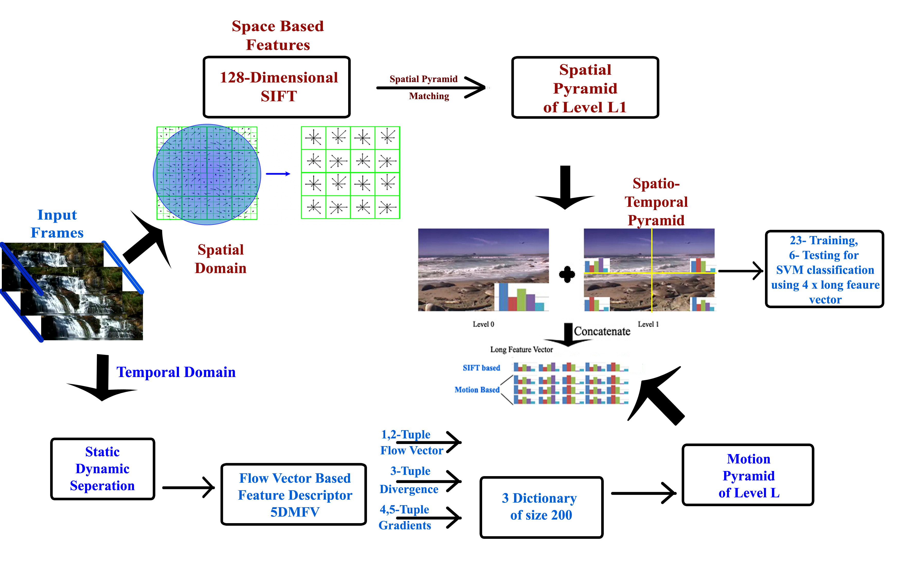

|  |
Arun Balajee Vasudevan, Srikanth Muralidharan, Siva Pratheek Chintapalli, Shanmuganathan Raman. Dynamic Scene Classification using Spatial and Temporal Cues.(Oral) Video Event Categorization and Retrieval (VECTaR) 2013, in conjunction with IEEE International Conference on Computer Vision, Sydney, Australia, December 7-8, 2013.
This paper proposes
a novel method for the classification of natural scenes
by processing both spatial and temporal information from
the video. For extracting the spatial characteristics, we
build spatial pyramids on SIFT descriptors while for the motion
characteristics, we introduce a five dimensional feature vector (5DMFV)
extracted from the optical flow field. http://www.cv-foundation.org/openaccess/ICCV2013_workshops/ICCV2013_W23.py |